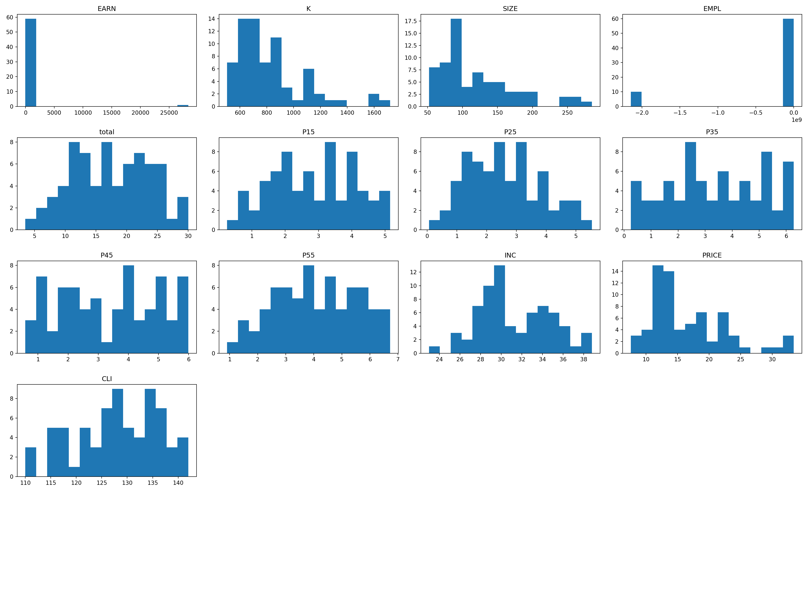
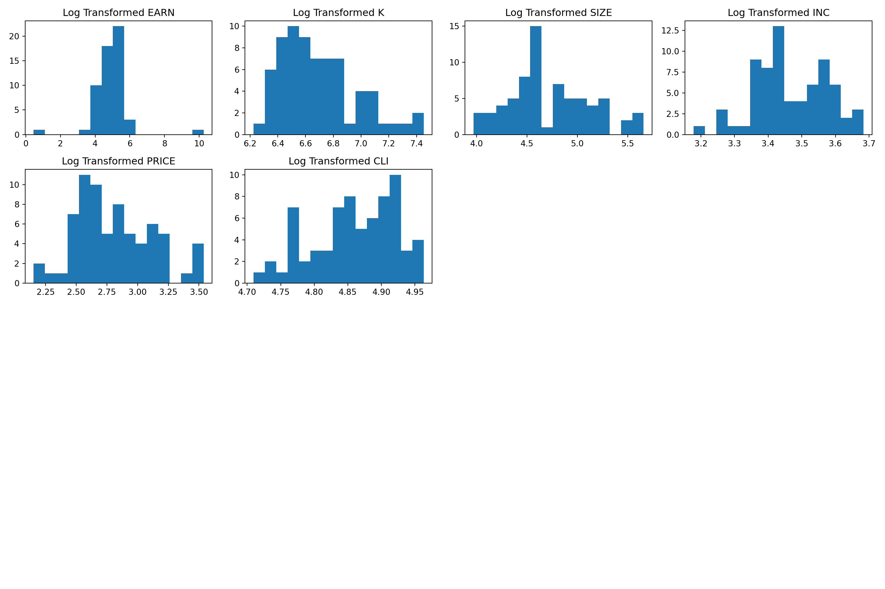
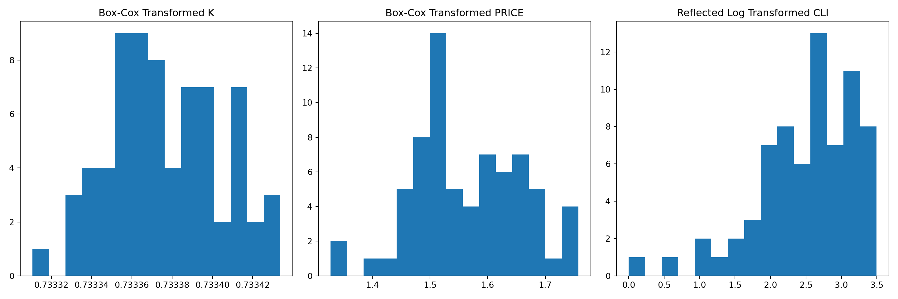
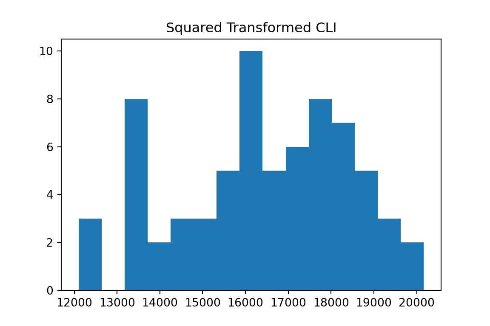
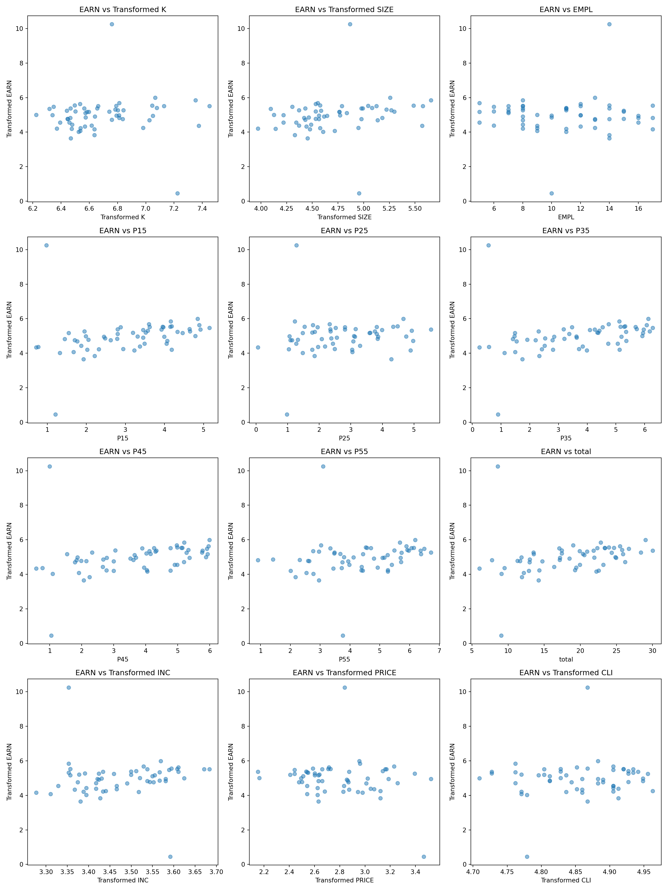

library(tidyverse)
library(arrow)
library(reticulate)
library(DT)
library(GGally)
library(readr)Michel’s task on finding best new 10 locations challenge will best suited with Regression Analytics when other 60 Locations data is given.
I have a dataset with 60 location’s information with the description below
Croq’Pain
Data on store earnings and other characteristics for the Croq’Pain case. There should be a total of 60 different stores and 10 potential new outlets. The model used for forecasting should be built on data for the existing 60 stores.
Variables
- STOR: Store ID
- CITY: City in the which store is located. Only provided for potential new outlets
- EARN: Earnings in $1,000. Operating earnings: annual sales minus annual operating costs. Operating costs exclude the fixed costs of property rent and equipment rental (all capital equipment is purchased by headquarters and rented to the stores). Operating costs include variable costs such as salaries, utilities, supplies, inventories and other expenses.
- K: Capital invested in the store in $1,000. This amount is exactly equal to the purchase price of the property (or the lease, in some cases) plus the cost of all equipment and the cost of remodeling the space.
- SIZE: Size of store in square meters: Total area inside the store
- EMPL: Number of employees. Not determined until store is opened
- P15: Number of 15-24 year olds in a 3 km radius around site in 1,000s
- P25: Number of 25-34 year olds in a 3 km radius around site 1,000s
- P35: Number of 35-44 year olds in a 3 km radius around site 1,000s
- P45: Number of 45-54 year olds in a 3 km radius around site 1,000s
- P55: Number of persons above 55 in a 3 km radius around site 1,000s
- total: Total population in 3 km radius around site 1,000s
- INC: Average income in $1,000 in town or neighborhood around site
- COMP: Number of competitors in a 1 km radius around site. Establishments considered as competitors include fast food restaurants, bars and cafes equipped providing lunch service
- NCOMP: Number of restaurants that do not compete directly with CroqPain in 1 km radius around site
- NREST: Number of non-restaurant businesses in 1 km radius around site
- PRICE: Monthly rent per square meter of the retail properties in the same locale.
- CLI = Cost of Living Index. Measures the cost of living in the immediate vicinity to the restaurant site. Aggregate of average cost of living index determined by the commerce department and additional economic measures taken by experts on site
- CITY: City name for potential new locations
Now I will run the corrlation table to see how each data points has the relavance to “EARN” column which is our gola to predict.
Before we read the data, let me load packages for both R & Python.
Load R Packages (R)
Load Python Packages (Python)
import pandas as pd
import numpy as np
import seaborn as sns
import matplotlib.pyplot as plt
from scipy.stats import boxcoxRead the data provided (R)
croqpain %>%
DT::datatable()
Before I fit a linear model, I would like to make sure the distribution if it’s a good data to fit a model by looking at Histogram and Scatter Plots.
Creat Histograms (Python)
num_columns = croqpain.select_dtypes(include=['float64', 'int64']).columns
selected_columns = ['EARN', 'K', 'SIZE', 'EMPL', 'total', 'P15', 'P25', 'P35', 'P45', 'P55', 'INC', 'PRICE', 'CLI']
plt.figure(figsize=(20, 15))
for i, col in enumerate(selected_columns, 1):
plt.subplot(5, 4, i)
plt.hist(croqpain[col].dropna(), bins=15)
plt.title(col)
plt.tight_layout()
plt.show()

Here, I see some skewness and want to make them normal distribution.
(Python)
# Selecting the relevant columns for transformation
cols_to_transform = ['EARN', 'K', 'SIZE', 'INC', 'PRICE', 'CLI']
df_transformed = croqpain[cols_to_transform].copy()
# Applying log transformation (adding a small value to avoid log(0))
# Using numpy's log1p which is log(x + 1) to handle zero values
df_transformed = np.log1p(df_transformed)/opt/conda/lib/python3.11/site-packages/pandas/core/internals/blocks.py:366: RuntimeWarning: invalid value encountered in log1p
result = func(self.values, **kwargs)# Plotting histograms after transformation
plt.figure(figsize=(15, 10))
for i, col in enumerate(cols_to_transform, 1):
plt.subplot(4, 4, i)
plt.hist(df_transformed[col].dropna(), bins=15)
plt.title(f'Log Transformed {col}')
plt.tight_layout()
plt.show()

K, Price is still Right Skewed, and CLI is left skewed. Let’s fix that!
# For right-skewed data ('K' and 'PRICE'), Box-Cox transformation
# Box-Cox requires all values to be positive, so add a small value to avoid zero or negative values
df_transformed['K_boxcox'], _ = boxcox(croqpain['K'] + 0.01)
df_transformed['PRICE_boxcox'], _ = boxcox(croqpain['PRICE'] + 0.01)
# For left-skewed data ('CLI'), we use a reflection (subtracting from a constant) and then log transformation
max_cli = croqpain['CLI'].max() + 1
df_transformed['CLI_reflected_log'] = np.log(max_cli - croqpain['CLI'])
# Plotting histograms after further transformations
plt.figure(figsize=(15, 5))<Figure size 1500x500 with 0 Axes># Box-Cox transformed histograms
plt.subplot(1, 3, 1)<Axes: >plt.hist(df_transformed['K_boxcox'].dropna(), bins=15)(array([1., 0., 3., 4., 4., 9., 9., 8., 4., 7., 7., 2., 7., 2., 3.]), array([0.73331066, 0.73331887, 0.73332707, 0.73333528, 0.73334348,
0.73335169, 0.7333599 , 0.7333681 , 0.73337631, 0.73338451,
0.73339272, 0.73340093, 0.73340913, 0.73341734, 0.73342554,
0.73343375]), <BarContainer object of 15 artists>)plt.title('Box-Cox Transformed K')Text(0.5, 1.0, 'Box-Cox Transformed K')plt.subplot(1, 3, 2)<Axes: >plt.hist(df_transformed['PRICE_boxcox'].dropna(), bins=15)(array([ 2., 0., 1., 1., 5., 8., 14., 5., 4., 7., 6., 7., 5.,
1., 4.]), array([1.32754057, 1.35622506, 1.38490955, 1.41359405, 1.44227854,
1.47096304, 1.49964753, 1.52833203, 1.55701652, 1.58570102,
1.61438551, 1.64307001, 1.6717545 , 1.70043899, 1.72912349,
1.75780798]), <BarContainer object of 15 artists>)plt.title('Box-Cox Transformed PRICE')Text(0.5, 1.0, 'Box-Cox Transformed PRICE')# Reflected log transformed histogram
plt.subplot(1, 3, 3)<Axes: >plt.hist(df_transformed['CLI_reflected_log'].dropna(), bins=15)(array([ 1., 0., 1., 0., 2., 1., 2., 3., 7., 8., 6., 13., 7.,
11., 8.]), array([0. , 0.2331005 , 0.46620101, 0.69930151, 0.93240202,
1.16550252, 1.39860302, 1.63170353, 1.86480403, 2.09790454,
2.33100504, 2.56410555, 2.79720605, 3.03030655, 3.26340706,
3.49650756]), <BarContainer object of 15 artists>)plt.title('Reflected Log Transformed CLI')Text(0.5, 1.0, 'Reflected Log Transformed CLI')plt.tight_layout()
plt.show()

Oh, No… CLI is still left skewed
# Applying a square transformation to 'CLI'
df_transformed['CLI_squared'] = croqpain['CLI'] ** 2
# Plotting the histogram for the squared 'CLI'
plt.figure(figsize=(6, 4))<Figure size 600x400 with 0 Axes>plt.hist(df_transformed['CLI_squared'].dropna(), bins=15)(array([ 3., 0., 8., 2., 3., 3., 5., 10., 5., 6., 8., 7., 5.,
3., 2.]), array([12100. , 12637.6, 13175.2, 13712.8, 14250.4, 14788. , 15325.6,
15863.2, 16400.8, 16938.4, 17476. , 18013.6, 18551.2, 19088.8,
19626.4, 20164. ]), <BarContainer object of 15 artists>)plt.title('Squared Transformed CLI')Text(0.5, 1.0, 'Squared Transformed CLI')plt.show()

Okay, good. Now we have a normally distributed data points.
How about Outliers? Will ther be any outliers to affect the data to be normal? let’s look at the scatter plots!
<Figure size 1500x2000 with 0 Axes><Axes: >
<matplotlib.collections.PathCollection object at 0xffff543fe950>
Text(0.5, 0, 'Transformed K')
Text(0, 0.5, 'Transformed EARN')
Text(0.5, 1.0, 'EARN vs Transformed K')
<Axes: >
<matplotlib.collections.PathCollection object at 0xffff5456b2d0>
Text(0.5, 0, 'Transformed SIZE')
Text(0, 0.5, 'Transformed EARN')
Text(0.5, 1.0, 'EARN vs Transformed SIZE')
<Axes: >
<matplotlib.collections.PathCollection object at 0xffff54556250>
Text(0.5, 0, 'EMPL')
Text(0, 0.5, 'Transformed EARN')
Text(0.5, 1.0, 'EARN vs EMPL')
<Axes: >
<matplotlib.collections.PathCollection object at 0xffff54432dd0>
Text(0.5, 0, 'P15')
Text(0, 0.5, 'Transformed EARN')
Text(0.5, 1.0, 'EARN vs P15')
<Axes: >
<matplotlib.collections.PathCollection object at 0xffff545b6d50>
Text(0.5, 0, 'P25')
Text(0, 0.5, 'Transformed EARN')
Text(0.5, 1.0, 'EARN vs P25')
<Axes: >
<matplotlib.collections.PathCollection object at 0xffff542ada90>
Text(0.5, 0, 'P35')
Text(0, 0.5, 'Transformed EARN')
Text(0.5, 1.0, 'EARN vs P35')
<Axes: >
<matplotlib.collections.PathCollection object at 0xffff54273850>
Text(0.5, 0, 'P45')
Text(0, 0.5, 'Transformed EARN')
Text(0.5, 1.0, 'EARN vs P45')
<Axes: >
<matplotlib.collections.PathCollection object at 0xffff54328a50>
Text(0.5, 0, 'P55')
Text(0, 0.5, 'Transformed EARN')
Text(0.5, 1.0, 'EARN vs P55')
<Axes: >
<matplotlib.collections.PathCollection object at 0xffff54361b10>
Text(0.5, 0, 'total')
Text(0, 0.5, 'Transformed EARN')
Text(0.5, 1.0, 'EARN vs total')
<Axes: >
<matplotlib.collections.PathCollection object at 0xffff54179b10>
Text(0.5, 0, 'Transformed INC')
Text(0, 0.5, 'Transformed EARN')
Text(0.5, 1.0, 'EARN vs Transformed INC')
<Axes: >
<matplotlib.collections.PathCollection object at 0xffff5419b650>
Text(0.5, 0, 'Transformed PRICE')
Text(0, 0.5, 'Transformed EARN')
Text(0.5, 1.0, 'EARN vs Transformed PRICE')
<Axes: >
<matplotlib.collections.PathCollection object at 0xffff5420ad90>
Text(0.5, 0, 'Transformed CLI')
Text(0, 0.5, 'Transformed EARN')
Text(0.5, 1.0, 'EARN vs Transformed CLI')
